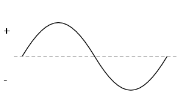

If you’re going to measure it you should at least have an idea of what you are measuring. The wikipedia answer is that voltage is the “electric potential difference between two points.” Very helpful. I still haven’t found a perfect analogy for voltage, current and resistance but our purpose here isn’t to get you a degree in engineering. We just want to make stuff. With that in mind let’s use the analogy of comparing a voltage source to a water pump. The pump is able to create a certain water pressure when you connect pipes to it. Some pumps might be able to generate 50psi of pressure while others can only generate 10psi. This is similar to how a AA battery provides 1.5V while a 9V provides…well…9 volts. It’s not a perfect analogy but it’s good enough to give you an idea of what voltage is. Everything we’ll build will require a source of voltage.
There are two kinds of voltage we care about: AC and DC. We’ll spend almost all of our time dealing with DC voltage. It’s a bit of a misnomer because the DC stands for Direct Current but we’re not actually talking about current yet. Just think of DC voltage as always on. The water pump is always running once you hook it up. Some sources of DC voltage are batteries, wall adapters, or even a lemon.
The other type of voltage is AC voltage. The AC stands for “alternating current”. Again, don’t let the word current fool you. We’re still talking about voltage. An AC voltage source swings from positive to negative and back to positive over and over. It’s like our pump runs forward for a second, then runs in reverse, then back to forward. A visualization of AC voltage would look like this.
